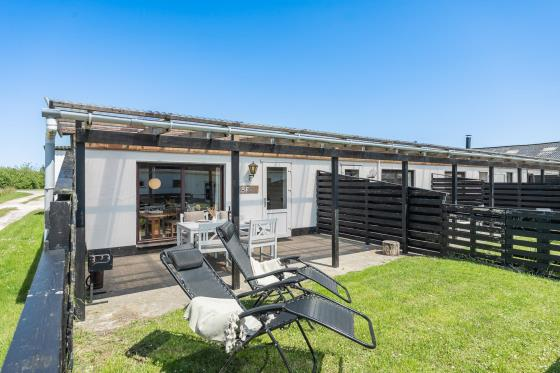
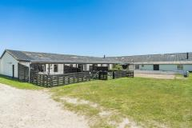
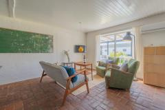
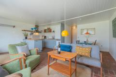
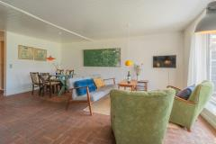

- Personen
- 4
- Schlafz.
- 2
- Bäder
- 1
- Wohnfläche
- 60 m²
- Baujahr
- 1951
- Zum Strand
- 3,0 km
- Einkauf
- 2,1 km
- Haustiere
- 2
FerienwohnungNichtraucherGeschirrspülerInternetWärmepumpe
Danibo vermietet hier 3 einfache und günstige Ferienwohnungen (vier bis sechs Personen) auf der ”Farm Rudbeck” - gelegen in der schönsten Natur von Fanø, direkt an der Nordsee und mit dem einzigartigen Vogelleben, das so typisch ist für diesen Teil der Insel.
Andere Zeiträume: Sa 17.10.–Sa 31.10. 768 €Sa 24.10.–Sa 31.10. 380 €Sa 24.10.–Sa 7.11. 705 €